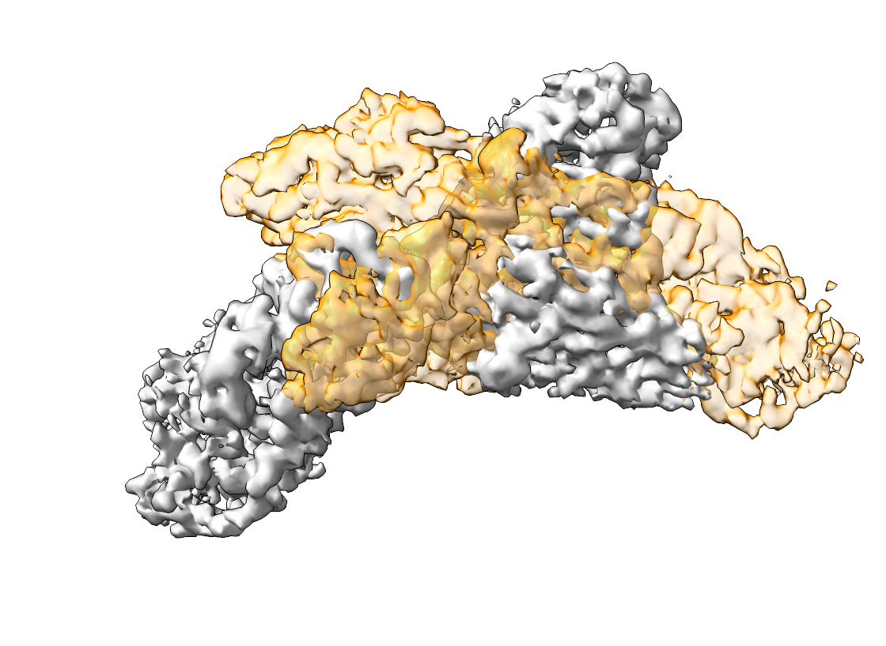
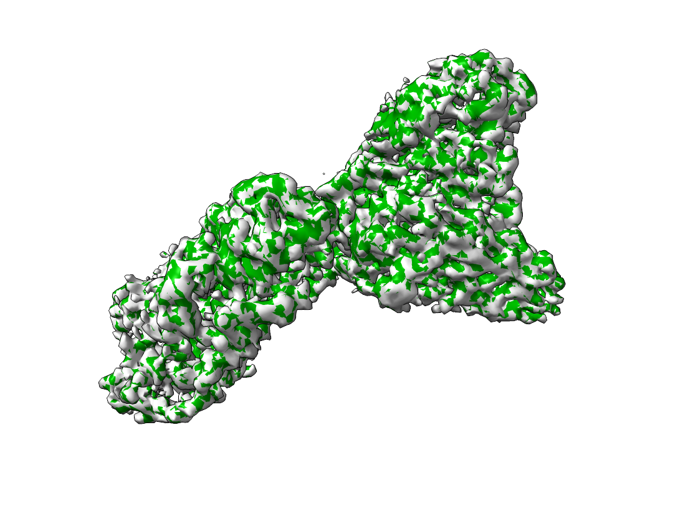

Alignment of Densities#
In the following we will use template matching to recover the correct orientation of a density map within another density map.
To demonstrate the procedure, we will use EMD-15271. You can download it from the EMDB or from the command line
wget https://ftp.ebi.ac.uk/pub/databases/emdb/structures/EMD-15271/map/emd_15271.map.gz
We will first simulate a translation and rotation of the map
import numpy as np
from tme import Density
from tme.rotations import get_rotation_matrices
rotation_matrix = get_rotation_matrices(40)[32]
density = Density.from_file("emd_15271.map.gz")
density, _ = density.centered(0) # Create a sufficiently sized volume for rotation
density_mod = density.rigid_transform(
rotation_matrix = rotation_matrix
)
density_mod.origin = np.add(
density.origin, np.multiply((-10, 5, 0), density.sampling_rate)
)
density.to_file("emd_15271.mrc")
density_mod.to_file("emd_15271_mod.mrc")
The following will recover the correct orientation between the densities
match_template.py \
-m emd_15271.mrc \
-i emd_15271_mod.mrc \
-a 40 \
-n 4
The orientation with highest score, which in our case is the initial correct orientation, can be obtained from the created pickle files like so
postprocess.py \
--input-file output.pickle \
--num-peaks 1 \
--output-format alignment \
--output-prefix emd_15271_fit
The aligned densities are displayed below. The left side shows the map and emd_15271_mod.mrc, the right side the output of pytme.
 {kind=link}
{kind=link}